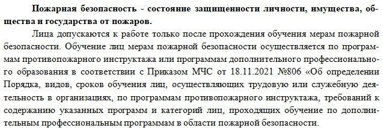
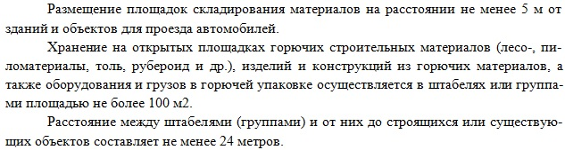

Пожарная безопасность при СМР

Раздел «Пожарная безопасность» — один из ключевых элементов проекта строительных и монтажных работ. Любое строительство связано с риском возгорания, поэтому важно грамотно разработать и обосновать требования по обеспечению пожарной безопасности.
Если проект включает огневые работы, использование открытого пламени, горючих материалов или битумных составов, раздел необходимо расширить. В нем должны быть подробно описаны все меры по предотвращению пожара:
- перечень противопожарных мероприятий и инструкций;
- средства пожаротушения и порядок их размещения;
- порядок проведения и контроля огневых работ.
Если огневые работы не предусмотрены, объем раздела сокращается. В этом случае достаточно указать общие требования:
- запрет на курение вне специально отведённых мест;
- осторожное обращение с легковоспламеняющимися материалами и топливом;
- рекомендации по действиям при возникновении пожара.
Раздел должен быть информативным, без избыточных деталей, но с полным охватом рисков, характерных для конкретного проекта.
Общий раздел включает:
- Общие положения. Укажите определение понятия пожарной пожарной безопасности, требования к персоналу и нормативные документы.

2. Организация территории строительства. Опишите подробно план пожарной защиты на объекте. Указывайте количество въездов, ширину дорог, места размещения планов эвакуации, а также требования к проездам и дорогам.
3. Наличие противопожарного водоснабжения. Укажите наличие средств противопожарного водоснабжения.
4. Порядок организации и складирования материала. Подробно напишите о размещении площадок складирования, правилах хранения горючих материалов, ограничениях по площади штабелей и расстоянии между складами и объектами.

5. Требования к временным сооружениям. Укажите требования о размещении административно-бытовых помещений, правилах заправки топливом и отоплении мобильных зданий.